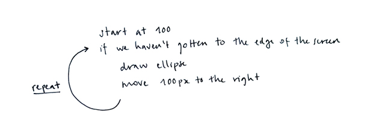
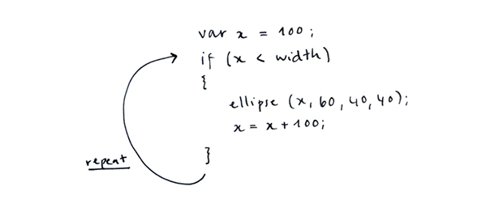
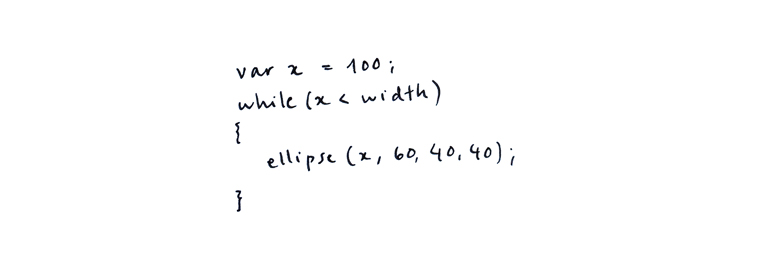
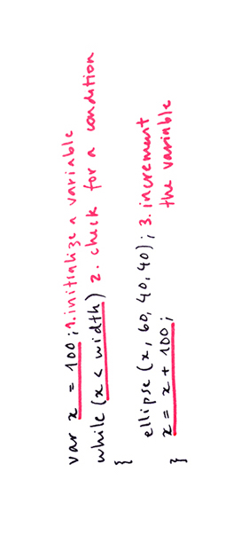
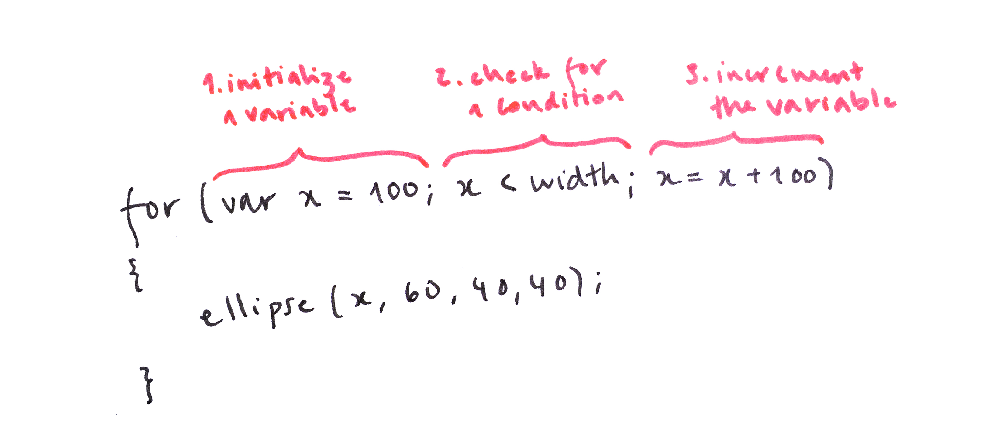
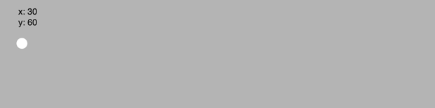

1) Draw the same shape many times
Suppose we want to draw five circles on a horizontal line, 100 pixels apart from each other. We might do it this way:
Now imagine we need to draw them closer, or farther apart from each other. This would mean re-calculating all of the x positions and updating them for all five ellipses.
2) Repeat shapes with a for loop
In writing the code above, we followed a thought process similar to this:

We can approximate this process in code like this:

What we are missing is a code statement that allows us to create the arrow that goes back to asking whether we got to the end of the screen. There is a control structure called while loop that does exactly this:

There are three steps we need to take to have our while work correctly. First, we initialize a variable. Second, we check whether it meets a condition. And third, we change the value of that variable in a way that will eventually make it meet the condition.

Because repeating a block of code over and over until a condition is met is such a common thing in programming, a shorthand for the while loop was created that puts the three steps together. It's called a for loop, and its syntax is as follows:

Here are our five ellipses from above, drawn using a for loop. Notice how we no longer have repeated lines in our code
Our growing x value can be used to play with other parameters apart from the ellipse's position. Here, we use it to change the circles' sizes:
3) Add a column to your row
Above, we have drawn a row of ellipses. Let's draw a column by adding a second for loop that draws circles at the same x position, but varies their y.
4) Add many columns to your row: draw a grid
If we draw a column of circles for each of the circles in our row, we can create a grid of circles.
Take a look at this animation: each time we draw a circle in the top row (with y = 60), we also draw another two (with y = 90 and y = 120):

Here is the code for creating the same grid (it is 30 pixels further up, because we don't need space for text).
The first time the outer for loop runs, x is 30. Then the inner for loop runs. y starts at 30. A circle is drawn. y is set to 60. The second circle is drawn, 30 px below the first. Then y is set to 90, and a third circle is drawn, 30px below the previous one. Now the inner for loop is done, the outer loop sets x to 60, and the cycle continues.
When a for loop is inside another for loop, we say they are nested.
5) Play with grids
Nested loops can be fun to play with. Our x and y variables can be used to play with other parameters, like size, transparency,
and color (here in RGB),
(and here in HSB)
6) Make a grid your own drawing into a grid
We can also create grids of more complex drawings, such as the happy face we created in previous learning activities. In this sketch it was made smaller (by dividing sizes and positions by 5 approximately), and drawn within two nested for loops.
Note that here we have added the variable x to avoid repeating i*30 four times (to draw the face, the left eye, the right eye, the mouth). If we did, the program would still work, but it would be harder to read and modify. The same goes for y, which stands for j*30. Using variables to avoid any repeating code is generally a good practice.